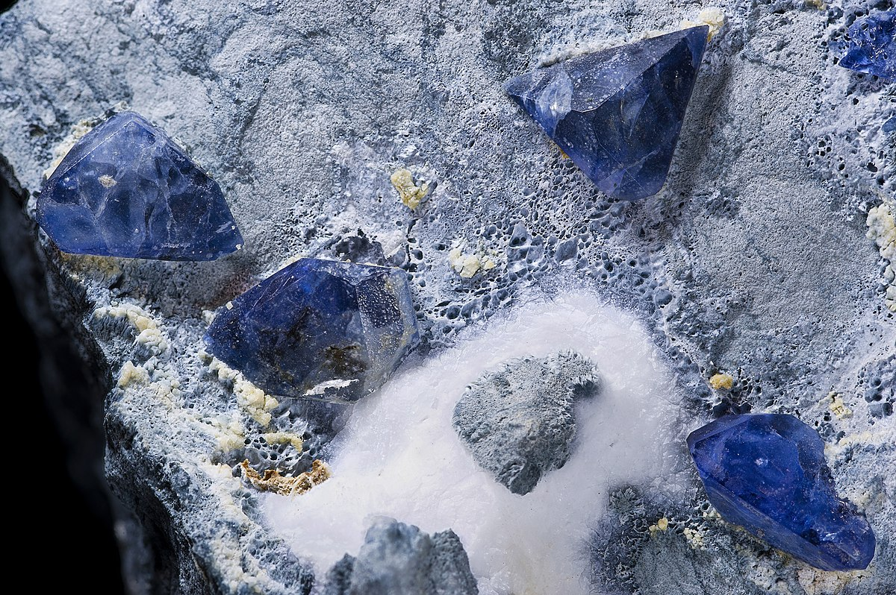

New here?

New to rockhounding and don't know where to start? Not to worry, we will show you the ropes. Click below to head over to our "Getting Started" guide
Getting StartedRocks & Minerals In California


California has some amazing rockhounding to offer. The state's rich geological history and diverse landscapes provide a treasure trove of unique minerals, gemstones, and fossils for enthusiasts to discover. Gold panning, a popular activity in California since the Gold Rush era, continues to attract hobbyists and tourists alike, offering a chance to experience the thrill of uncovering precious gold flakes and nuggets in the state's numerous gold-bearing rivers and streams.
Sponsored Dig Site

Own a digsite you would like to advertize in California? Contact us for more information about being our sponsor of the month! Email sponsors@rockhounding.org for more information.
Dig With UsPopular Rocks In California
-
 Jasper
JasperJasper is a versatile gemstone with a variety of colors, and California is well-known for its high-quality green jasper.
Read More -

Benitoite
California is the only place in the world where the rare and beautiful blue benitoite gemstone can be found.
Read More -
 Fire Agate
Fire AgateCalifornia is known for its beautiful fire agate gemstones, which have iridescent colors caused by thin layers of iron oxide.
Read More -
 Garnet
GarnetCalifornia has a variety of garnet deposits, including the well-known Little Three Mine in Ramona, which produces high-quality gemstones.
Read More -
 Gold
GoldCalifornia has a rich history of gold mining, with the famous California Gold Rush taking place in the mid-1800s.
Read More -
 Tourmaline
TourmalineCalifornia is known for its beautiful pink and green tourmaline gemstones, which can be found in various locations throughout the state.
Read More -
 Amethyst
AmethystCalifornia has several amethyst deposits, with beautiful purple crystals that are sought after by collectors and enthusiasts.
Read More -
 Quartz
QuartzQuartz is a versatile clear crystal found in many locations throughout California, including the Sierra Nevada Mountains.
Read More -
Howlite
Howlite, a white gemstone with grey veins, was first discovered in California and can still be found in various locations throughout the state.
Read More
Popular Areas In California
-
 California Gemfields
California GemfieldsThe California Gemfields, located in the Sierra Nevada Mountains, are a popular destination for rockhounds looking to find a variety of gemstones and minerals.
Read More -
 Benitoite Gem Mine
Benitoite Gem MineThe Benitoite Gem Mine in San Benito County is a favorite among rock enthusiasts, offering opportunities to dig for the rare and beautiful blue benitoite gemstone.
Read More -
 Himalaya Mine
Himalaya MineThe Himalaya Mine in San Diego County is a popular spot for rock collectors looking to mine their own gemstones, such as tourmaline, quartz, and lepidolite.
Read More -
 Pala Pegmatite District
Pala Pegmatite DistrictThe Pala Pegmatite District in San Diego County is famous for its pegmatite formations, which contain gemstones such as tourmaline, kunzite, and morganite.
Read More -
 Mojave Desert
Mojave DesertThe vast Mojave Desert in California offers opportunities to find a variety of minerals, such as agate, jasper, and chalcedony, as well as gold and silver.
Read More -
 Trona Gemorama
Trona GemoramaTrona Gemorama is an annual event in the Searles Valley where rock enthusiasts can collect minerals such as halite and hanksite crystals.
Read More
Geology of California
California's diverse geology is the result of millions of years of tectonic activity, volcanic eruptions, and erosion. The state's geologic history can be divided into several main phases, including the formation of ancient rocks, the creation of the Sierra Nevada, and the development of the San Andreas Fault system.
The oldest rocks in California date back to the Precambrian era, over 1 billion years ago. These ancient rocks are primarily metamorphic, such as gneiss and schist, and can be found in the eastern part of the state, in areas like the Mojave Desert and Death Valley.
During the Paleozoic and Mesozoic eras, California was located near the western edge of the North American tectonic plate. Sediments from the ocean floor were deposited along the coastline, eventually forming the rocks that make up the Sierra Nevada mountain range. This process was accompanied by volcanic activity, which created the granitic rocks found in the region today.
The San Andreas Fault system, a major tectonic boundary between the Pacific and North American plates, has played a crucial role in shaping California's geology. The fault system's movement has resulted in the creation of numerous mountains, valleys, and basins throughout the state. This tectonic activity is also responsible for the frequent earthquakes that occur in the region.
California's varied geology has led to the formation of a wide range of mineral deposits and gemstones, making it a popular destination for rockhounds and geologists alike. The state's rich geological history and diverse landscapes provide ample opportunities for exploration and discovery.